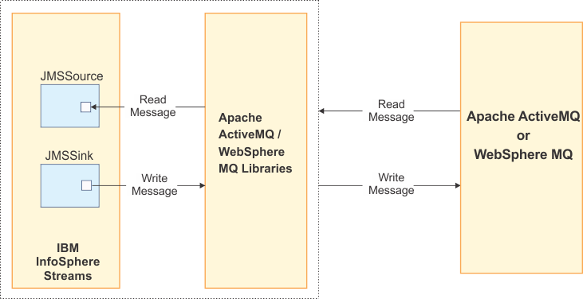

IBMStreams com.ibm.streamsx.jms Toolkit > com.ibm.streamsx.jms 2.0.0
The JMS toolkit project is an open source IBM Streams toolkit project. It provides operators and functions that help you use IBM Streams to interact with JMS systems such as Websphere MQ or Apache ActiveMQ.
The operators provide the ability for IBM Streams applications to send and receive data from a queue or topic that is posted on a WebSphere MQ or Apache ActiveMQ server.
The JMSource and JMSSink operators use the standard JMS architecture and JMS 1.1 APIs to read and write data from WebSphere MQ v7.5, v8.0 and Apache ActiveMQ v5.7 and up.
The following figure shows how the JMSSource and JMSSink operators in the JMS toolkit use standard JMS architecture and APIs.

The JMS toolkit operators must be configured to connect to messaging systems. This configuration information is specified in an XML document, called a connection specifications document.